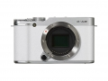

依旧沿用1600万像素APS-C格式传感器，搭配EXR Processor II图像处理，感光度范围ISO 100-25600，内置Wi-Fi。相对于上代产品X-A1，X-A2的最大变化在于改用了新的翻折屏设计，这也是首款具有动态175度翻折式LCD的X系列机型，可让您拍摄自拍照更加轻松，并且附带了全新的XC16-50mm F3.5-5.6 OIS II套机镜头，微距摄影时具有仅15cm的最近工作距离（距离镜片边缘大约7cm）。